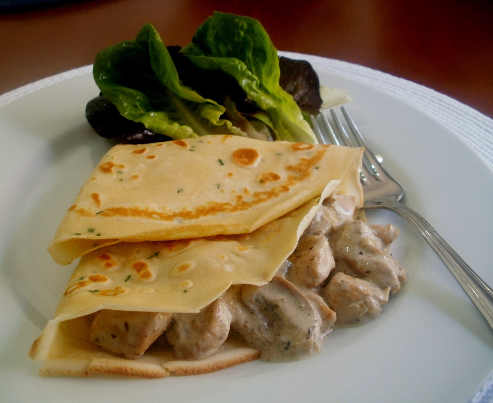

2 tablespoons of olive oil
500 grams of chopped Portobello mushroom
1 cup of chicken cooked or grilled in cubes
2 tablespoons butter without salt
2 tablespoons of flour
1 and ½ cup of milk
¼ teaspoon nutmeg
½ cup grated Parmesan cheese
¼ or ½ bucket of chicken broth
Salt
Green onions or chopped onions to decorate
Pepper
Preparation:
Heat two tablespoons of the oil in a skillet over medium heat. Add the portobellos, then salt and cook for 5 minutes. Mix and flip the mushrooms until they soften and release their juices. Add the chicken and mix it with the mushrooms for 1 or 2 minutes. Season with salt and pepper. Remove from heat and leave the pan covered.
In a pan, melt two tablespoons of butter. Add 2 tablespoons of flour, cook and stir for 1 minute to form a kind of flour sauce. Add milk to this mixture and stir to integrate. Cook the mixture, stirring constantly, over medium heat until it bubbles and thickens. Now add the nutmeg, the parmesan cheese and little by little the cube of chicken broth. Do not add the whole cube at once.
Now pour this mixture to the combination of mushrooms and chicken. It is not necessary that you add it all. You can always add more if necessary. Season with salt and pepper if you think it necessary.
Fill the crepes, sprinkle with green onions or onions and go.

To whom I leave a video for your better understanding